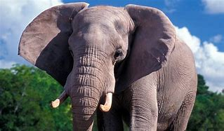

Hipervínculos
Hipervínculos externos
A una página de Internet
LOS ELEFANTES
A una página de Internet en una imagen

Hipervínculos internos
la informacion
elefantes
caracteristicas
su alimentacion
LOS ELEFANTES
informacon sobre los elefantes
Los elefántidos o mejor conocidos como elefantes (Elephantidae) forman parte de la familia de los mamíferos placentarios.
Hoy en día existen dos géneros, el elefante africano y el elefante asiático y cada uno cuenta con algunas especies, aunque muchas otras especies y subespecies pertenecientes a esta familia se han extinguido. Un género completo muy conocido que se extinguió en su totalidad es el (mammuthus) que incluía a los mamuts.
Características del elefante
Características del elefante
Son los animales terrestres más grandes del mundo, siendo el elefante africano el de mayor tamaño ya que puede llegar a pesar hasta 7,000-7.500 kg. Las hembras por lo regular son más pequeñas.
La trompa del elefante que contiene 100 mil músculos y tendones, juega un papel muy importante y necesario para su vida. Con ella puede agarrar, respirar, alimentarse, oler, beber agua, levantar objetos, producir sonidos, comunicarse, bañarse, defenderse, protegerse y detectar a otros miembros. De igual manera poseen colmillos muy grandes y fuertes hechos de marfil que pueden pesar hasta 120 kg y tener tres metros de longitud en casos extremos, aunque comúnmente miden menos de un metro.
Sus orejas también son muy importantes, pues debido a su gran tamaño, sus grandes pabellones auditivos les permiten regular su temperatura.
Los elefantes poseen un cerebro que pesa cinco kilos y una gruesa piel de hasta 3.8 cm de espesor, aunque es sensible, pues se revuelcan en el lodo para evitar picaduras de mosquitos y otros insectos.
alimentacion del elefante
Los elefantes son los mamíferos más grandes que existen en tierra firme. Su gran porte y su belleza ha causado la admiración de todas las civilizaciones humanas que los han conocido. A lo largo de la historia, se han utilizado para portear objetos e, incluso, para luchar en la guerra. Posteriormente, se han capturado en la naturaleza para ser exhibidos en zoos y circos, así como para pasear a los turistas que acuden al sur de Asia.
Sin embargo, muy pocas personas saben que estos animales poseen una inteligencia muy similar a la nuestra y son capaces de desarrollar todas las emociones que conocemos en el ser humano. Esto no ha hecho que sus capturas para la obtención de marfil disminuyan, lo que supone hoy día su mayor amenaza.